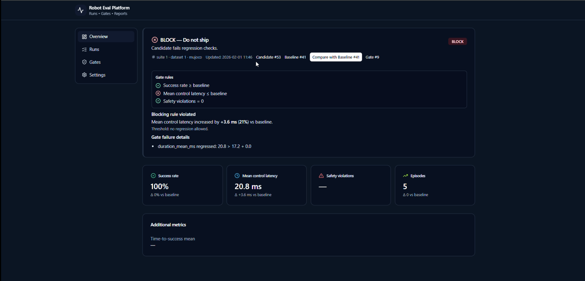
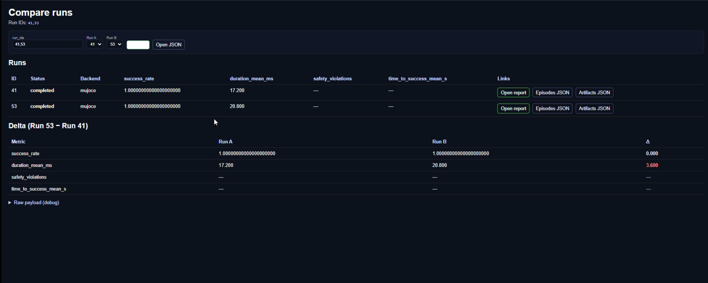
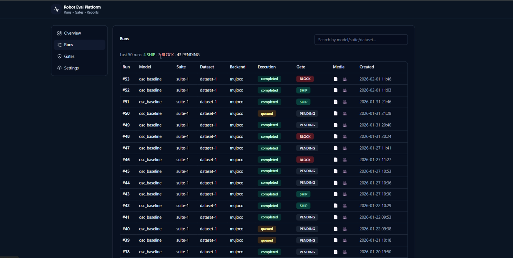
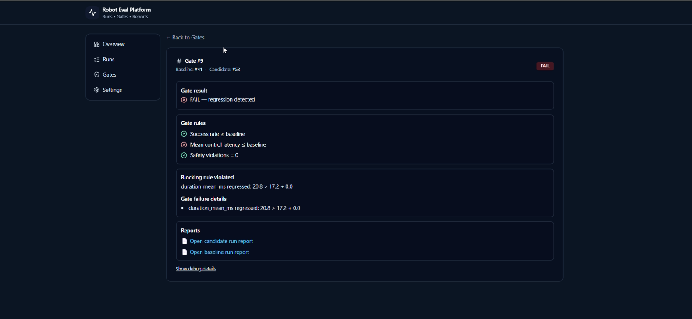
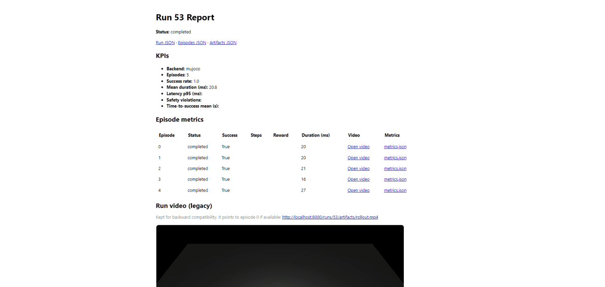
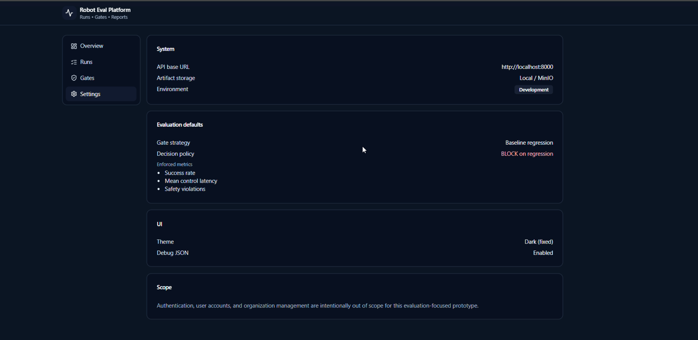

Results & Impact
Erlangen, Germany • Robotics Simulation & Control • Sim2Real
This page highlights measurable outcomes across my robotics work: simulation fidelity, stable control, task success, and repeatable evaluation — backed by artifacts (metrics, reports, and videos).
100%
Task Success Rate (Demo run)
Measured over 5 episodes in the Robot Eval Platform demo.
20.8 ms
Mean Control Latency (Candidate)
Regression detected: +3.6 ms (+21%) vs baseline 17.2 ms.
BLOCK
Release Gate Decision (Do not ship)
Candidate automatically blocked due to violating the latency regression rule.
This is the “decision layer” that prevents silent regressions from reaching real robots.
This demo shows: run execution → rollout video → metrics artifacts → gating decision (SHIP/BLOCK).





